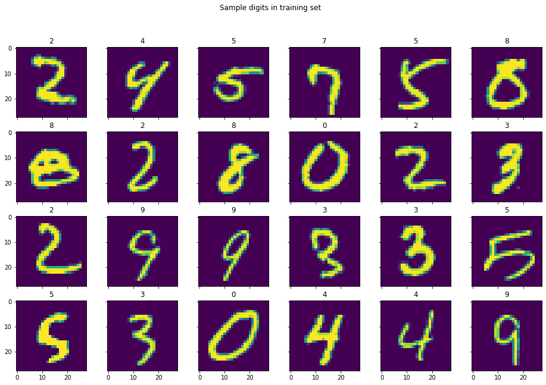
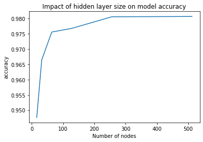
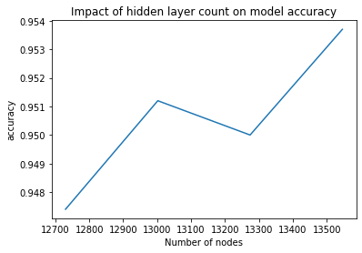

Because you all have a number of assignments coming due soon this is a short practical. WE will use keras/tensorflow in a multi-class classification (10-levels) of the MNIST hand written digits dataset.
Basic keras/tensorflow usage.
Effect of number of nodes in a single hidden layer network (theory vs practice).
Effect of adding more hidden layers.
Dense vs CNN in terms of number of parameters and model performance.
Imports and Setup
First import our three standard python modules for data mining
Now we import keras and keras.layers. This is different from the imports used in the lecture but it probably more convenient. (To install both, see lecture notes.)
The MNIST dataset consists of 70,000 hand-written digits, each digit is stored in a 28x28 grayscale image. This dataset has been extensively studied and is complex enough to benefit from using neural networks, but small enough that training times are not an issue.
If you have followed along in the earlier weeks, then you have downloaded the dataset already. But to keep things consistent today we will use the version of the MNIST dataset from keras.
So we have split the 70,000 observations into 60,000 for training and 10,000 for testing. Each of the observations consists of a 28z28 pixel image. Each pixel is a single integer in range 0..255.
The following code show the first 24 observations and their labels. Note that the images are in grayscale (so each pixel is a single value), and the colouring is only mapping.
1 2 3 4 5 6 7 8 91011
k=10fig,axs=plt.subplots(4,6,sharex=True,sharey=True,figsize=(16,10))foraxinaxs.flat:k=np.random.randint(0,x_train.shape[0])ax.imshow(x_train[k])ax.set_title(y_train[k]);plt.suptitle("Sample digits in training set")plt.savefig("output/Sample_digits_in_training.png",bbox_inches="tight")plt.show()

First 24 inputs and their labels.
Preprocessing
First we scale the inputs from range 0..255 to 0..1.
123
# Scale images to the [0, 1] rangex_train=x_train.astype("float32")/255x_test=x_test.astype("float32")/255
Then add an extra dimension to the input data, so that the last dimension has size one. This is expected by the neural network.
12345
# Make sure images have shape (28, 28, 1)print("original x_train shape:",x_train.shape)x_train=np.expand_dims(x_train,-1)x_test=np.expand_dims(x_test,-1)print("x_train shape:",x_train.shape)
The input x_train and x_test are a list of 2-dimensional 28x28 images. So the first step is to flatten the images to be 1-dimensional. This is the role of
layers.Flatten. We could have converted to data to 1D before passing into the neural network using the numpy method reshape.
If we want to see how many parameters are in the network we can use model.count_params(). This network has 12,175 parameters.
Function model.summary() generates a summary of the network and the number of trainable parameters pere layer:
Test loss: 0.1866159439086914
Test accuracy: 0.9476000070571899
Effect of (Single) Hidden Layer Size
During the lecture (slide 15) we mentioned the result that said any bounded continuous function can by approximated with arbitrarily small error, by network with one hidden layer [Cybenko 1989; Hornik et al. 1989]. Lets see what happens to the accuracy when we increase the size of the hidden layer for this problem.
Steps:
Create a range of sizes for the number of nodes in the hidden layer and empty lists to store the resulting number of parameters and the accuracy.
123
sizes=[2**kforkinrange(4,10)]params=[]accuracy=[]
Then using a loop structure like
1 2 3 4 5 6 7 8 91011121314
forsizeinsizes:print(size)## define model## train model - use option verbose=0 to kill off output!## append number of param in current model to paramsparams.append(model.count_params())## append accuracy in current model to accuracyscore=model.evaluate(x_test,y_test,verbose=0)accuracy.append(score[1])
You should get
size
16
32
64
128
256
512
param
12,730
25,450
50,890
101,770
203,530
407,050
accuracy
0.9474
0.9659
0.9744
0.9787
0.9816
0.9808
and graphically

Impact of hidden layer size on model accuracy.
As you can see the accuracy initially increased as more nodes were added to the hidden layer but the accuracy maxed out at 98.2% and seem be decreasing (I have not checked) when number of nodes approaches 512. It is possible to do better than
98.2%, so what has gone wrong?
The Cybenko and Hornik et al. results say arbitrary high accuracy is possible, but does not say how easy/difficult it is to achieve.
The issue here could be the effort to train as the number of parameters increase. With 512 nodes in the hidden layer, there are 407,050 trainable parameters. We could up the number of iterations for training but the problem here is that half a million parameters for such a simple classification problem is silly.
### Effect of Multiple Hidden Layers
OK, so lets see what happens when we add multiple hidden layers. To keep things simple we will just add multiple hidden layers of size 16 nodes.
The setup and loop in nearly the same as before except now you need to used the model.add method to programmatically add the hidden layer as apposed
123
num_layers=range(1,6)params=[]accuracy=[]
Then using a loop structure like
1 2 3 4 5 6 7 8 910111213141516171819
fornuminnum_layers:print("Number of Hidden Layers",num)## define modelmodel=keras.Sequential()model.add(keras.Input(shape=(28,28)))model.add(layers.Flatten(input_shape=(28,28)))# ... and so on using a loop to add the num hidden layers## train model - use option verbose=0 to kill off output!## append number of param in current model to paramsparams.append(model.count_params())## append accuracy in current model to accuracyscore=model.evaluate(x_test,y_test,verbose=0)accuracy.append(score[1])
You should get
num_layers
1
2
3
4
5
param
12,730
13,002
13,274
13,546
13,818
accuracy
0.9487
0.9545
0.9545
0.9559
0.9496
and graphically

Impact of number of hidden layer size on model accuracy.
This is a bit disappointing - we are not breaking the 99% accuracy barrier. Again training difficulty as the number of parameters increase is the issue.
We could work harder and spend more time training, or work smarter and use a better network structure — did anyone say convolution neural networks?
we get test accuracy of 99.1%. This is the best yet and we have only 34,826 trainable parameters.
Todo
You could see if you can determine a similar sized network with better performance. For example tweeking the dropout rate or even replacing Dropout with BatchNormalization are worth trying.